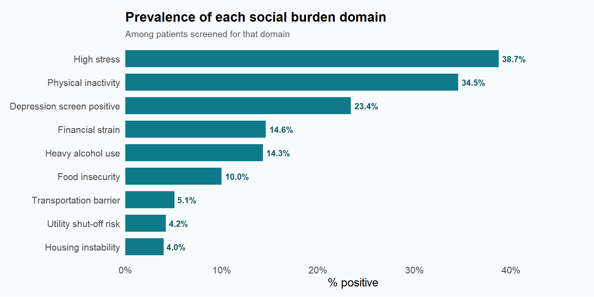
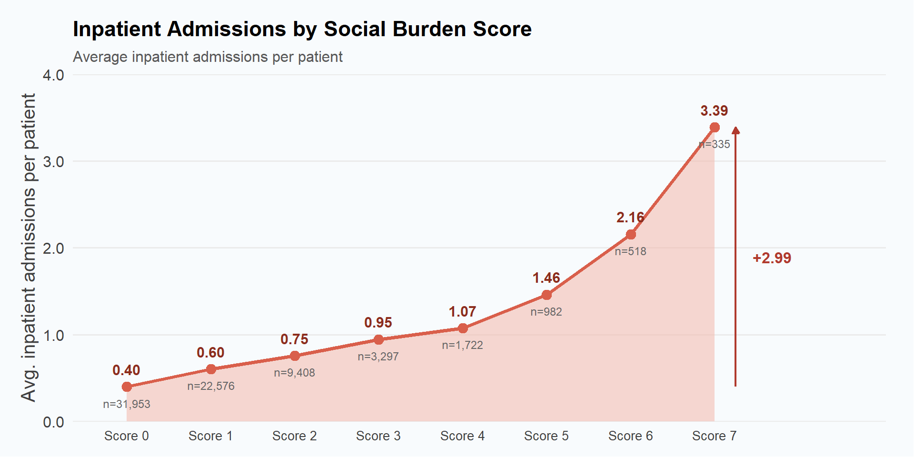
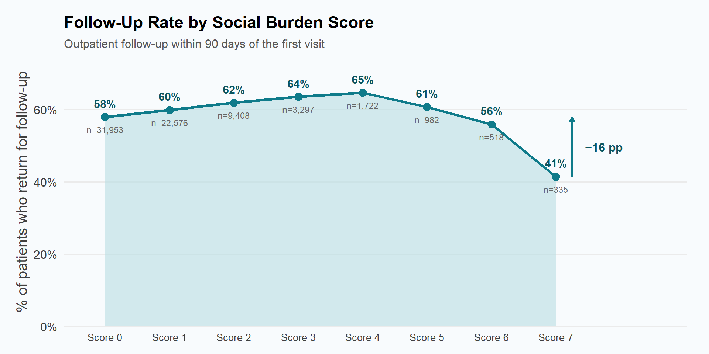
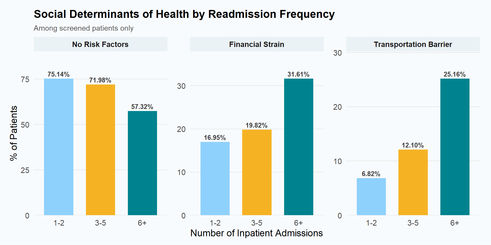
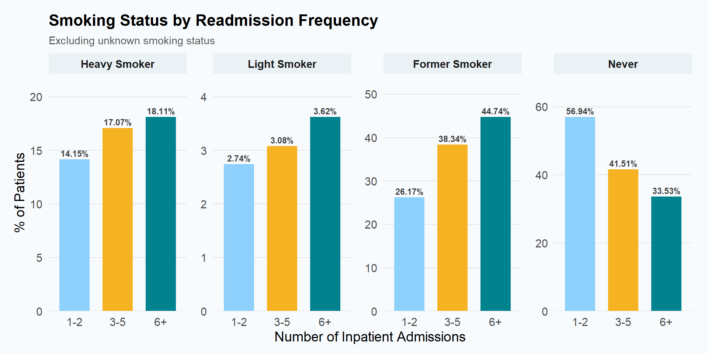

Data
The dataset is private outside of the hackathon and is not included in this repository. It spans multiple CSVs and hundreds of features across millions of rows; only the fields used in this analysis were selected and compiled into working tables.
No patient-level records are published. Everything on this page is aggregated. The analysis expects the source files in a local DATA/ folder.
Social Burden Score
One point per positive domain, across nine domains. A patient enters the score only if they answered at least one domain; missing domains add zero.
- Food: “sometimes” or “often” true on either food question.
- Transportation: “yes” to either transportation question.
- Housing: homeless, no steady place to sleep in the past year, or 3+ moves.
- Financial: paying for basics is somewhat hard, hard, or very hard, or unable to pay rent on time.
- Utilities: threatened shut-off or already shut off.
- Stress: “rather much” or “very much.”
- Depression: Edinburgh ≥ 10 or PHQ-2 ≥ 3.
- Alcohol: drinking 2–3 times a week or more, or weekly binge drinking.
- Inactivity: zero days of moderate exercise per week.
Readmission and follow-up
An inpatient admission is a distinct inpatient stay; consecutive inpatient days count once. Readmission bands are 1–2, 3–5, and 6+ stays.
Follow-up means a face-to-face outpatient visit within 90 days of the patient’s first outpatient visit. The score is cross-sectional: it uses the most recent positive answer available, not a time-varying exposure.
Care-gap escalation
An anchor is a face-to-face outpatient visit coded to a chronic condition. Escalation is the next care contact after the anchor being an ED visit, hospital admission, or inpatient stay. Lab and imaging days are ignored so they do not reset the follow-up clock.
The gap is days from the anchor to that next contact. Same-day contacts are excluded.
Model
The patient-level outcome is whether a patient ever escalated. A logistic regression adjusts for smoking, MyChart activation, race, age, condition count, and visit count. Each social factor is added separately, so the reported N varies by row.
Odds ratios are descriptive. Visit count doubles as observation time, so it is not a causal estimate. The compound-risk chart is unadjusted by design.
Reproducibility
Every figure is written by the R Markdown code in this repository. Running the analysis with the private source data regenerates the PNGs in assets/img/.
Limitations
- The social score is cross-sectional and based on questionnaire coverage; it is not a time-varying exposure.
- The highest score group is small (n=335), so the final follow-up drop is directional.
- The “both risk factors” group in the compound chart is small (n=198).
- Odds ratios are adjusted associations, not causal effects. Unmeasured confounding remains.
- The original hackathon deck used a looser questionnaire denominator; this page uses the stricter, patient-level cohort described above.
Act I · Social burden
Barriers compound. They do not just add up.
The Social Burden Score counts how many of nine social risk domains a patient screens positive for. As the score rises, inpatient use climbs and timely follow-up falls.
70,791
patients with a usable SDOH survey
0.59
average inpatient admissions per patient
60%
return for outpatient follow-up within 90 days
1.8%
of inpatients have 6+ admissions

01Stress and inactivity are the most common barriers. Housing and utility risk are the rarest.
How to read it. Each bar is the share of patients screened for that domain who screen positive. Every domain has its own denominator and defined threshold, so read each bar within its own screened group.
Denominators vary by domainCode: social_burden_dashboard.RmdFull-size chart

02Every additional barrier travels with more inpatient use.
How to read it. Points are the average number of distinct inpatient stays per patient in each score group. The line rises from 0.40 at score 0 to 3.39 at score 7, roughly an 8.5× increase.
N = 70,791 patientsCode: social_burden_dashboard.RmdFull-size chart

03Follow-up peaks in the middle, then falls sharply for the highest-burden patients.
How to read it. The chart shows the share of patients with a face-to-face outpatient visit within 90 days of their first outpatient visit. Follow-up rises to 65% at score 4, then drops to 41% at score 7, a 16-point gap versus score 0. The score-7 group is small (n=335), so treat the final drop as directional.
N = 70,791 patientsCode: social_burden_dashboard.RmdFull-size chart

04The no-risk share falls as readmissions rise. Financial and transportation barriers rise.
How to read it. Each panel shows the share of screened patients with that factor within each admission band. Panels use different y-axis scales. From 1–2 to 6+ admissions, the no-risk share falls 17.8 points, while financial strain and transportation barriers rise by 14.7 and 18.3 points.
Screened patients onlyCode: social_burden_dashboard.RmdFull-size chart

05Never-smokers fall from 56.9% to 33.5% as admissions rise. Former smokers rise from 26.2% to 44.7%.
How to read it. Each panel shows the share of patients in a smoking group within each admission band, excluding unknown smoking status. Heavy and light smokers also grow, but from a smaller base.
Inpatients with known smoking statusCode: social_burden_dashboard.RmdFull-size chart